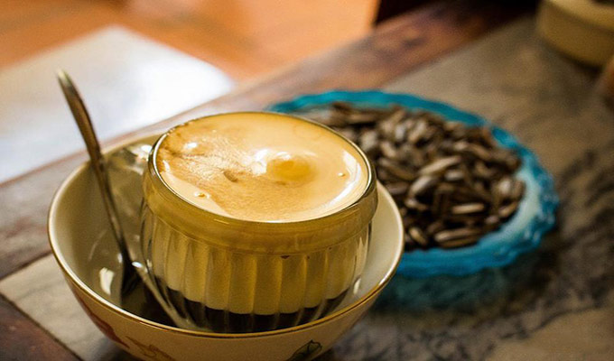
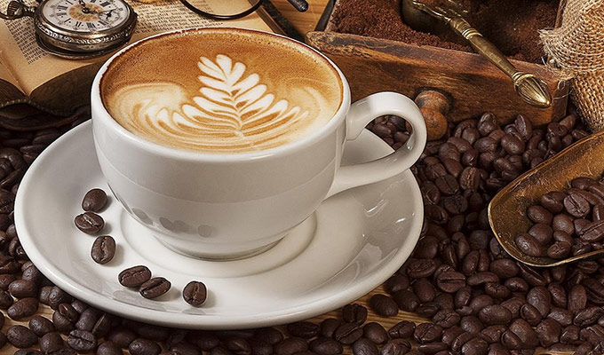
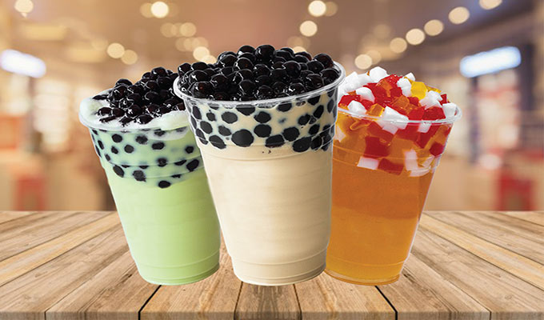
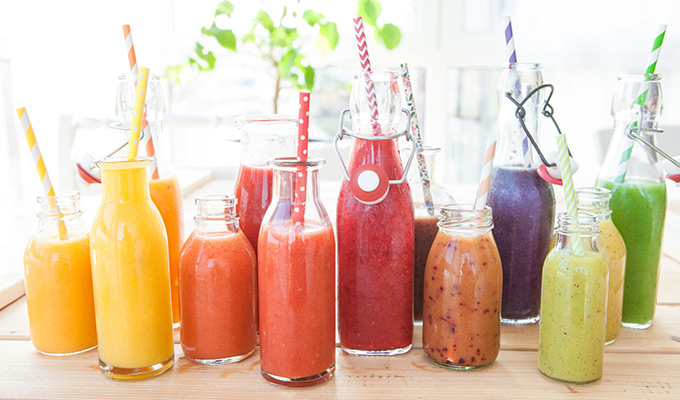
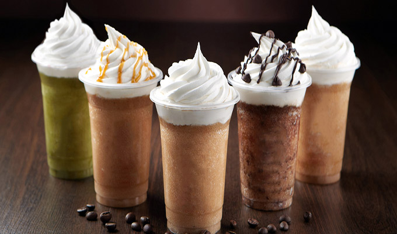
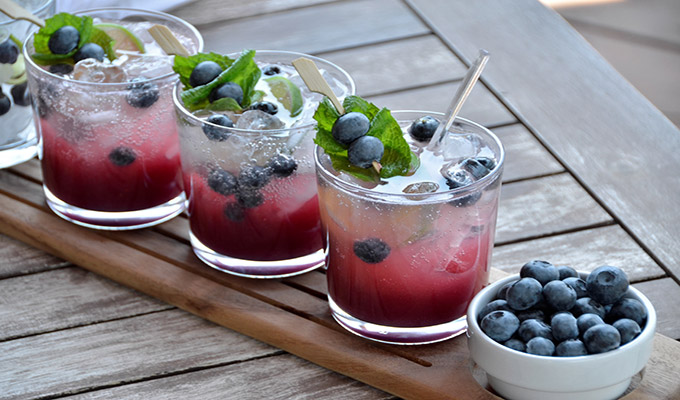
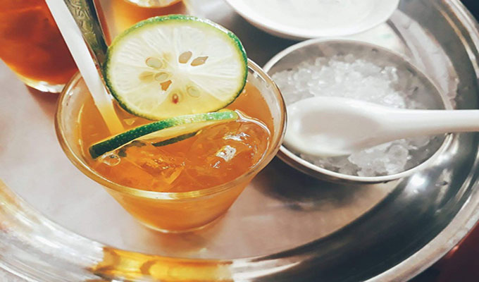
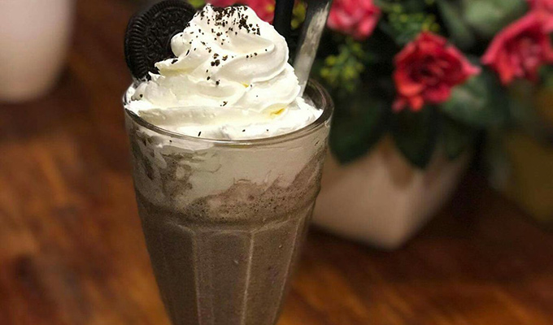
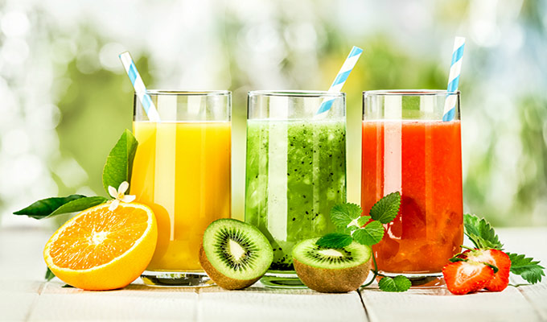
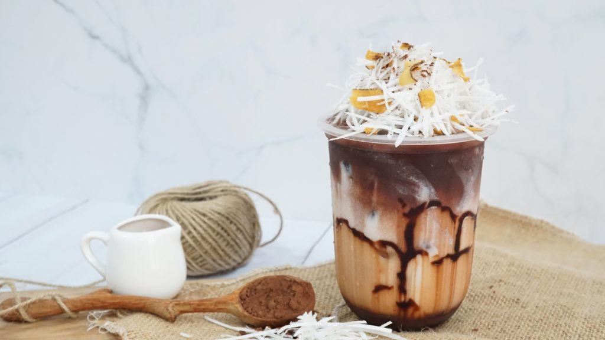

// 0
// 0
 // 1000
// 1000
 // 2000
// 2000
 // 3000
// 3000
 // 4000
// 4000
 // 5000
// 5000
1.コーヒー（伝統的なベトナム）
伝統的なベトナムのコーヒーを知っていますか？
伝統的なベトナムのカフェを参照：ブラックコーヒー、シルバー、ブラウンコーヒー（ミルク）、...さらに、
最近、若者は今でも愛しています：ココナッツミルクカフェ、エッグカフェ、... ベトナムのコーヒーは、強い風味と強いカフェインが好む美味しい飲み物です。
ベトナムカフェは多くの外国人に愛されています。 また、多く若者やビジネスマンによく知られている飲み物です。

2.カプチーノ
ベトナムのコーヒーはその豊かな味に愛されています。輸入コーヒーは、機械を使用した独自の準備、美しい形、優しい味、飲みやすいため、
今日の若者の間で非常に暑いです。 美味しい輸入コーヒーの種類は、ラテ、カプチーノ、エスプレッソカフェなどです。
ハノイやサイゴンの多くのカフェでは、カプチーノカフェを簡単に購入して楽しむことができます。

3.ミルクティー
ミルクティーは台湾産の飲料で、緑茶または紅茶から作られ、ミルクが加えられています。
。
ミルクティーは、特にベトナムの若者に愛されています。飲みやすく、多様な味と手頃な価格です。

4.スムージー(smoothies)
新しくて栄養価の高い飲み物が好きな人にとってます。
スムージーはフルーツスムージーとほとんど同じです。 スムージーはフルーツジュース、冷凍フルーツ、シロップ、または香味料から作られます。
チョコレート、バター、ピーナッツなどを加えて、風味を豊にします。

5.アイスブレンド（ice blended）
アイスブレンドドリンクになると、おそらくアイスブレンドを考えるでしょう。 シロップ、香味料、およびクリームの厚い層を上にブレンドした氷を使用してブレンドした氷。
アイスブレンドドリンクが今日のティーンエイジャーの間で特に人気があるのには、2つの主な理由があります。
それは、おいしい冷たい味と魅力的な形です。 アイスブレンドガラスには、コーヒー、モカ、バニラ、キャラメル、クッキー、
フルーツ、フラペチーノなど、多くの選択肢があります。

6.ソーダ
ソーダは、炭酸飲料の感触と、新鮮なフルーツ、ミルク、または他の多くの特別でユニークなフレーバーのその他のおいしいフレーバーの組み合わせでユーザーにアピールします。
温かいソーダの種類は、ブルーベリーモヒート、夏の非常に良い飲み物、暑い気候などです。

7.レモンティー
レモンティーは、新鮮なレモンのスライスが点在する非常に甘いジャスミンのかすかに匂いがします。
甘みと酸味、レモンティーの苦味はあまり良くありませんが、退屈せずにインスタントカップを飲むのに役立ちます。

8.クッキークリーム(Cookie Cream)
クッキークリームは、チョコレートビスケットの味に基づいて、さまざまなクリームとシェイクから作られています。
クッキークリームは、牛乳とクリームの脂っこい味、またはバニラの香りのヒントでユーザーを魅了します。
現在、ほとんどのカフェではクッキークリームが販売されているため、自分でカップを購入して楽しむことは難しくありません。

9.ジュース スムージー
健康的な食品を使用する傾向は、若い女性チームの動きになりつつあります。
新鮮な果物からの飲み物は、体重を減らし、解毒し、消化しやすくするのに役立ちます...
オレンジジュース、リンゴジュース、アボカドスムージーなどの最も人気のあるスムージー...

10.ココナッツミルク
最近、飲料市場はココナッツミルクのレシピで急成長しています。
顧客は、ココナッツの香り、牛乳の脂肪分、ココアのおいしい苦味のおかげで、それらを愛しています。
粉ミルク、ココナッツミルク、お湯などの材料を用意するだけで、ココナッツシロップと一緒に使用するココナッツの香りを高めることができます。
少し歯ごたえのある歯ごたえのあるココナッツゼリーを追加して、飲み物を確保したり、誰かの心を打ち負かしたりします。

Gmail
VietFood@ckg.co.jp